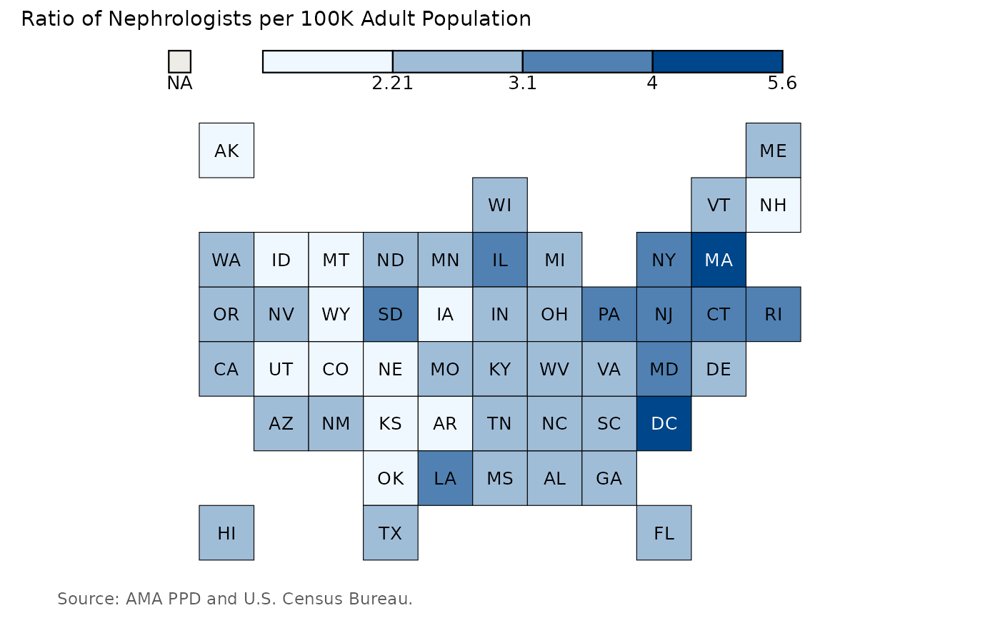

Create a U.S. Tilegrid Choropleth Map in ggplot2 in style of The Economist
Source:R/asn_tilegrid.R
asn_tilegrid.RdCreate a U.S. Tilegrid Choropleth Map in ggplot2 in style of The Economist
Arguments
- data
A data frame, comprising a column with 2-letter USPS state abbreviations and a column with a numeric variable to be visualized in a tilegrid choropleth map.
- data_source
Source of the numeric data visualized in the choropleth.
- plot_title
Plot title.
- state_column
Column containing 2-letter USPS state abbreviations.
- numeric_column
Column containing numeric data being visualized in choropleth.
- plot_panel_color
Background color for plot.
- palette
Vector of hex colors mapping numeric column to choropleth map fill color.
- breaks
Numeric vector of breaks corresponding to colors in the color palette mapping to the numeric column.
- zero_color
Optional hex color to indicate states with a 0 numeric value.
- na_color
Optional hex color to indicate states with missing values.
Examples
asn_tilegrid(
data = neph_per_100K_df,
data_source = "AMA PPD and U.S. Census Bureau.",
plot_title = "Ratio of Nephrologists per 100K Adult Population",
state_column = "MailState",
numeric_column = neph_per_100k,
plot_panel_color = "#ffffff",
palette = c("#f0f8ff", "#a0bdd8", "#5081b2", "#00468b"),
breaks = c(2.21, 3.1, 4, 5.6),
zero_color = NULL,
na_color = "#EEECE6"
)
